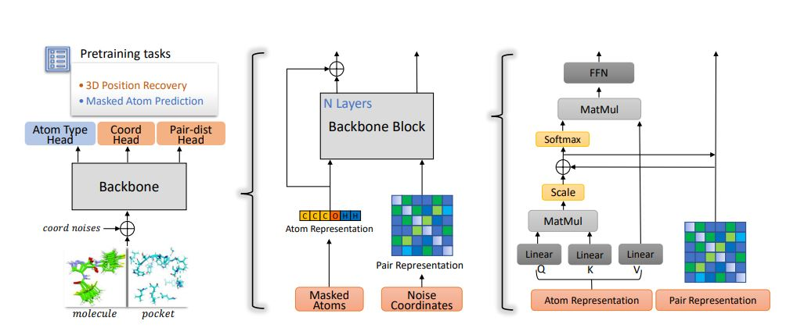

技术文档
为了更好地理解Uni-Mol，文档的前半部分根据文章内容，使用公式和总结性语句描述了Uni-Mol的设计思路，文档的后半部分则展示了一些关键公式和模型思路所对应的代码
Uni-Mol文章关于模型的阐述

上图是Uni-Mol预训练模型的架构图，可以看出Uni-Mol和经典Transformer模型的异同之处在于：
输入
- 由于本身的置换不变性，Transformer模型对输入序列的位置没有分辨能力，为了使模型学习到化合物分子的3D信息，Uni-Mol将坐标信息嵌入到信息传播过程，所以Uni-Mol有两个输入，分别是atom types和atom coordinates。
- 在预训练的自监督学习中，Uni-Mol和Transformer都需要对输入进行mask操作，Uni-Mol关于坐标的mask使用了noise range方法，所谓noise range是指在原始坐标上加一个处于一定范围内的随机坐标。
注意力头
- Uni-Mol构建了三种用于输出的head，分别关注模型中的Atom Type，Coordinates以及Pair-dist信息
表征(representation)
- 为了使模型学习到化合物结构中原子信息和原子间距离信息，Uni-Mol在信息传递过程中维持了两种表征，分别是Atom Representation和Pair Representation，这两种表征在模型的自注意力层中进行信息交换。
\[q_{ij}^{l+1}=q_{ij}^{l}+\lbrace{\frac{Q_{i}^{l,h} \lbrace{K_{j}^{l,h}}\rbrace^{T}}{\sqrt{d}}}\mid h \in [1,H]\rbrace \tag{1}\]
公式1代表atom-to-pair的信息交流，\(q_{ij}^{l}\)是原子对ij在第l层的pair representation，H是注意力头的数量，d是隐藏层的维度，\(Q_{i}^{l,h}\)(\(K_{j}^{l,h}\))是第i(j)个原子关于第l层第h个注意力头的query(key)。
\[Attention(Q_{i}^{l,h},K_{j}^{l,h},V_{j}^{l,h})=softmax({\frac{Q_{i}^{l,h}\lbrace{K_{i}^{l,h}}\rbrace^{T}}{\sqrt{d}}} + q_{ij}^{l-1,h})V_{j}^{l,h} \tag{2}\]
公式2代表pair-to-atom的信息交流，\(V_{i}^{l,h}\)是第j个原子在第l层第h个注意力头的value。
预测3D坐标
- Uni-Mol在模型中引入关注原子间距离的注意力头(Pair-dist Head)，通过计算被掩盖原子坐标与真实值的差异，并与坐标输入值相加，得到原子的预测坐标
\[\hat{x_i}=x_i+\sum_{j = 0}^{n}\frac{(x_i-x_j)C_{ij}}{n} \tag{3}, c_{ij}=ReLU((q_{ij}^{L}-q_{ij}^{0})U)W\]
公式3中，n代表化合物中的原子数量，L是模型层数，\(x_i\)是第i个原子的输入坐标，\(\hat{x_i}\)是第i个原子的输出坐标。
Uni-Mol代码解读
unimol.py
# Copyright (c) DP Technology.
# This source code is licensed under the MIT license found in the
# LICENSE file in the root directory of this source tree.
import logging
import torch
import torch.nn as nn
import torch.nn.functional as F
from unicore import utils
from unicore.models import BaseUnicoreModel, register_model, register_model_architecture
from unicore.modules import LayerNorm, init_bert_params
from .transformer_encoder_with_pair import TransformerEncoderWithPair
from typing import Dict, Any, List
logger = logging.getLogger(__name__)
@register_model("unimol")
class UniMolModel(BaseUnicoreModel):
@staticmethod
def add_args(parser):
"""Add model-specific arguments to the parser."""
pass
def __init__(self, args, dictionary):
super().__init__()
base_architecture(args)
self.args = args
self.padding_idx = dictionary.pad()
self.embed_tokens = nn.Embedding(
len(dictionary), args.encoder_embed_dim, self.padding_idx
)
self._num_updates = None
self.encoder = TransformerEncoderWithPair(
encoder_layers=args.encoder_layers,
embed_dim=args.encoder_embed_dim,
ffn_embed_dim=args.encoder_ffn_embed_dim,
attention_heads=args.encoder_attention_heads,
emb_dropout=args.emb_dropout,
dropout=args.dropout,
attention_dropout=args.attention_dropout,
activation_dropout=args.activation_dropout,
max_seq_len=args.max_seq_len,
activation_fn=args.activation_fn,
no_final_head_layer_norm=args.delta_pair_repr_norm_loss < 0,
)
if args.masked_token_loss > 0:
self.lm_head = MaskLMHead(
embed_dim=args.encoder_embed_dim,
output_dim=len(dictionary),
activation_fn=args.activation_fn,
weight=None,
)
K = 128
n_edge_type = len(dictionary) * len(dictionary)
self.gbf_proj = NonLinearHead(
K, args.encoder_attention_heads, args.activation_fn
)
self.gbf = GaussianLayer(K, n_edge_type)
if args.masked_coord_loss > 0:
self.pair2coord_proj = NonLinearHead(
args.encoder_attention_heads, 1, args.activation_fn
)
if args.masked_dist_loss > 0:
self.dist_head = DistanceHead(
args.encoder_attention_heads, args.activation_fn
)
self.classification_heads = nn.ModuleDict()
self.apply(init_bert_params)
@classmethod
def build_model(cls, args, task):
"""Build a new model instance."""
pass
def forward(
self,
src_tokens,
src_distance,
src_coord,
src_edge_type,
encoder_masked_tokens=None,
features_only=False,
classification_head_name=None,
**kwargs
):
if classification_head_name is not None:
features_only = True
padding_mask = src_tokens.eq(self.padding_idx)
if not padding_mask.any():
padding_mask = None
# 获取关于atom representation的嵌入向量
x = self.embed_tokens(src_tokens)
def get_dist_features(dist, et):
n_node = dist.size(-1)
# 将距离矩阵用高斯核函数映射到多维矩阵
gbf_feature = self.gbf(dist, et)
gbf_result = self.gbf_proj(gbf_feature)
graph_attn_bias = gbf_result
graph_attn_bias = graph_attn_bias.permute(0, 3, 1, 2).contiguous()
graph_attn_bias = graph_attn_bias.view(-1, n_node, n_node)
return graph_attn_bias
#获取关于pair representation的嵌入向量
graph_attn_bias = get_dist_features(src_distance, src_edge_type)
(
encoder_rep,
encoder_pair_rep,
delta_encoder_pair_rep,
x_norm,
delta_encoder_pair_rep_norm,
) = self.encoder(x, padding_mask=padding_mask, attn_mask=graph_attn_bias)
encoder_pair_rep[encoder_pair_rep == float("-inf")] = 0
encoder_distance = None
encoder_coord = None
# 预训练中对应的三个输出头，分别对应原子、坐标和距离的信息
if not features_only:
if self.args.masked_token_loss > 0:
logits = self.lm_head(encoder_rep, encoder_masked_tokens)
if self.args.masked_coord_loss > 0:
coords_emb = src_coord
if padding_mask is not None:
atom_num = (torch.sum(1 - padding_mask.type_as(x), dim=1) - 1).view(
-1, 1, 1, 1
)
else:
atom_num = src_coord.shape[1] - 1
# 公式3对应的代码
delta_pos = coords_emb.unsqueeze(1) - coords_emb.unsqueeze(2)
attn_probs = self.pair2coord_proj(delta_encoder_pair_rep)
coord_update = delta_pos / atom_num * attn_probs
coord_update = torch.sum(coord_update, dim=2)
encoder_coord = coords_emb + coord_update
if self.args.masked_dist_loss > 0:
encoder_distance = self.dist_head(encoder_pair_rep)
# 微调训练中用于分类的head
if classification_head_name is not None:
logits = self.classification_heads[classification_head_name](encoder_rep)
if self.args.mode == 'infer':
return encoder_rep, encoder_pair_rep
else:
return (
logits,
encoder_distance,
encoder_coord,
x_norm,
delta_encoder_pair_rep_norm,
)
def register_classification_head(
self, name, num_classes=None, inner_dim=None, **kwargs
):
"""Register a classification head."""
pass
def set_num_updates(self, num_updates):
pass
def get_num_updates(self):
pass
class MaskLMHead(nn.Module):
"""Head for masked language modeling."""
def __init__(self, embed_dim, output_dim, activation_fn, weight=None):
super().__init__()
self.dense = nn.Linear(embed_dim, embed_dim)
self.activation_fn = utils.get_activation_fn(activation_fn)
self.layer_norm = LayerNorm(embed_dim)
if weight is None:
weight = nn.Linear(embed_dim, output_dim, bias=False).weight
self.weight = weight
self.bias = nn.Parameter(torch.zeros(output_dim))
def forward(self, features, masked_tokens=None, **kwargs):
# Only project the masked tokens while training,
# saves both memory and computation
if masked_tokens is not None:
features = features[masked_tokens, :]
x = self.dense(features)
x = self.activation_fn(x)
x = self.layer_norm(x)
# project back to size of vocabulary with bias
x = F.linear(x, self.weight) + self.bias
return x
class ClassificationHead(nn.Module):
"""Head for sentence-level classification tasks."""
def __init__(
self,
input_dim,
inner_dim,
num_classes,
activation_fn,
pooler_dropout,
):
super().__init__()
self.dense = nn.Linear(input_dim, inner_dim)
self.activation_fn = utils.get_activation_fn(activation_fn)
self.dropout = nn.Dropout(p=pooler_dropout)
self.out_proj = nn.Linear(inner_dim, num_classes)
def forward(self, features, **kwargs):
x = features[:, 0, :] # take <s> token (equiv. to [CLS])
x = self.dropout(x)
x = self.dense(x)
x = self.activation_fn(x)
x = self.dropout(x)
x = self.out_proj(x)
return x
class NonLinearHead(nn.Module):
"""Head for simple classification tasks."""
def __init__(
self,
input_dim,
out_dim,
activation_fn,
hidden=None,
):
super().__init__()
hidden = input_dim if not hidden else hidden
self.linear1 = nn.Linear(input_dim, hidden)
self.linear2 = nn.Linear(hidden, out_dim)
self.activation_fn = utils.get_activation_fn(activation_fn)
def forward(self, x):
x = self.linear1(x)
x = self.activation_fn(x)
x = self.linear2(x)
return x
class DistanceHead(nn.Module):
def __init__(
self,
heads,
activation_fn,
):
super().__init__()
self.dense = nn.Linear(heads, heads)
self.layer_norm = nn.LayerNorm(heads)
self.out_proj = nn.Linear(heads, 1)
self.activation_fn = utils.get_activation_fn(activation_fn)
def forward(self, x):
bsz, seq_len, seq_len, _ = x.size()
# x[x == float('-inf')] = 0
x = self.dense(x)
x = self.activation_fn(x)
x = self.layer_norm(x)
x = self.out_proj(x).view(bsz, seq_len, seq_len)
x = (x + x.transpose(-1, -2)) * 0.5
return x
@torch.jit.script
def gaussian(x, mean, std):
pi = 3.14159
a = (2 * pi) ** 0.5
return torch.exp(-0.5 * (((x - mean) / std) ** 2)) / (a * std)
class GaussianLayer(nn.Module):
def __init__(self, K=128, edge_types=1024):
super().__init__()
self.K = K
self.means = nn.Embedding(1, K)
self.stds = nn.Embedding(1, K)
self.mul = nn.Embedding(edge_types, 1)
self.bias = nn.Embedding(edge_types, 1)
nn.init.uniform_(self.means.weight, 0, 3)
nn.init.uniform_(self.stds.weight, 0, 3)
nn.init.constant_(self.bias.weight, 0)
nn.init.constant_(self.mul.weight, 1)
def forward(self, x, edge_type):
mul = self.mul(edge_type).type_as(x)
bias = self.bias(edge_type).type_as(x)
x = mul * x.unsqueeze(-1) + bias
x = x.expand(-1, -1, -1, self.K)
mean = self.means.weight.float().view(-1)
std = self.stds.weight.float().view(-1).abs() + 1e-5
return gaussian(x.float(), mean, std).type_as(self.means.weight)
@register_model_architecture("unimol", "unimol")
def base_architecture(args):
args.encoder_layers = getattr(args, "encoder_layers", 15)
args.encoder_embed_dim = getattr(args, "encoder_embed_dim", 512)
args.encoder_ffn_embed_dim = getattr(args, "encoder_ffn_embed_dim", 2048)
args.encoder_attention_heads = getattr(args, "encoder_attention_heads", 64)
args.dropout = getattr(args, "dropout", 0.1)
args.emb_dropout = getattr(args, "emb_dropout", 0.1)
args.attention_dropout = getattr(args, "attention_dropout", 0.1)
args.activation_dropout = getattr(args, "activation_dropout", 0.0)
args.pooler_dropout = getattr(args, "pooler_dropout", 0.0)
args.max_seq_len = getattr(args, "max_seq_len", 512)
args.activation_fn = getattr(args, "activation_fn", "gelu")
args.pooler_activation_fn = getattr(args, "pooler_activation_fn", "tanh")
args.post_ln = getattr(args, "post_ln", False)
args.masked_token_loss = getattr(args, "masked_token_loss", -1.0)
args.masked_coord_loss = getattr(args, "masked_coord_loss", -1.0)
args.masked_dist_loss = getattr(args, "masked_dist_loss", -1.0)
args.x_norm_loss = getattr(args, "x_norm_loss", -1.0)
args.delta_pair_repr_norm_loss = getattr(args, "delta_pair_repr_norm_loss", -1.0)
@register_model_architecture("unimol", "unimol_base")
def unimol_base_architecture(args):
base_architecture(args)
transformer_encoder_with_pair.py
# Copyright (c) DP Technology.
# This source code is licensed under the MIT license found in the
# LICENSE file in the root directory of this source tree.
from typing import Optional
import math
import torch
import torch.nn as nn
import torch.nn.functional as F
from unicore.modules import TransformerEncoderLayer, LayerNorm
class TransformerEncoderWithPair(nn.Module):
def __init__(
self,
encoder_layers: int = 6,
embed_dim: int = 768,
ffn_embed_dim: int = 3072,
attention_heads: int = 8,
emb_dropout: float = 0.1,
dropout: float = 0.1,
attention_dropout: float = 0.1,
activation_dropout: float = 0.0,
max_seq_len: int = 256,
activation_fn: str = "gelu",
post_ln: bool = False,
no_final_head_layer_norm: bool = False,
) -> None:
super().__init__()
self.emb_dropout = emb_dropout
self.max_seq_len = max_seq_len
self.embed_dim = embed_dim
self.attention_heads = attention_heads
self.emb_layer_norm = LayerNorm(self.embed_dim)
if not post_ln:
self.final_layer_norm = LayerNorm(self.embed_dim)
else:
self.final_layer_norm = None
if not no_final_head_layer_norm:
self.final_head_layer_norm = LayerNorm(attention_heads)
else:
self.final_head_layer_norm = None
self.layers = nn.ModuleList(
[
TransformerEncoderLayer(
embed_dim=self.embed_dim,
ffn_embed_dim=ffn_embed_dim,
attention_heads=attention_heads,
dropout=dropout,
attention_dropout=attention_dropout,
activation_dropout=activation_dropout,
activation_fn=activation_fn,
post_ln=post_ln,
)
for _ in range(encoder_layers)
]
)
def forward(
self,
emb: torch.Tensor,
attn_mask: Optional[torch.Tensor] = None,
padding_mask: Optional[torch.Tensor] = None,
) -> torch.Tensor:
bsz = emb.size(0)
seq_len = emb.size(1)
x = self.emb_layer_norm(emb)
x = F.dropout(x, p=self.emb_dropout, training=self.training)
# account for padding while computing the representation
if padding_mask is not None:
# 预训练中，获取掩盖之后的atom representation
x = x * (1 - padding_mask.unsqueeze(-1).type_as(x))
input_attn_mask = attn_mask
input_padding_mask = padding_mask
def fill_attn_mask(attn_mask, padding_mask, fill_val=float("-inf")):
if attn_mask is not None and padding_mask is not None:
# merge key_padding_mask and attn_mask
attn_mask = attn_mask.view(x.size(0), -1, seq_len, seq_len)
attn_mask.masked_fill_(
padding_mask.unsqueeze(1).unsqueeze(2).to(torch.bool),
fill_val,
)
attn_mask = attn_mask.view(-1, seq_len, seq_len)
padding_mask = None
return attn_mask, padding_mask
assert attn_mask is not None
# 获取掩盖之后的pair representation
attn_mask, padding_mask = fill_attn_mask(attn_mask, padding_mask)
# 信息在层间传播过程中，维持atom representation和pair representation的存在
for i in range(len(self.layers)):
x, attn_mask, _ = self.layers[i](
x, padding_mask=padding_mask, attn_bias=attn_mask, return_attn=True
)
def norm_loss(x, eps=1e-10, tolerance=1.0):
x = x.float()
max_norm = x.shape[-1] ** 0.5
norm = torch.sqrt(torch.sum(x**2, dim=-1) + eps)
error = torch.nn.functional.relu((norm - max_norm).abs() - tolerance)
return error
def masked_mean(mask, value, dim=-1, eps=1e-10):
return (
torch.sum(mask * value, dim=dim) / (eps + torch.sum(mask, dim=dim))
).mean()
x_norm = norm_loss(x)
if input_padding_mask is not None:
token_mask = 1.0 - input_padding_mask.float()
else:
token_mask = torch.ones_like(x_norm, device=x_norm.device)
x_norm = masked_mean(token_mask, x_norm)
if self.final_layer_norm is not None:
x = self.final_layer_norm(x)
delta_pair_repr = attn_mask - input_attn_mask
delta_pair_repr, _ = fill_attn_mask(delta_pair_repr, input_padding_mask, 0)
attn_mask = (
attn_mask.view(bsz, -1, seq_len, seq_len).permute(0, 2, 3, 1).contiguous()
)
delta_pair_repr = (
delta_pair_repr.view(bsz, -1, seq_len, seq_len)
.permute(0, 2, 3, 1)
.contiguous()
)
pair_mask = token_mask[..., None] * token_mask[..., None, :]
delta_pair_repr_norm = norm_loss(delta_pair_repr)
delta_pair_repr_norm = masked_mean(
pair_mask, delta_pair_repr_norm, dim=(-1, -2)
)
if self.final_head_layer_norm is not None:
delta_pair_repr = self.final_head_layer_norm(delta_pair_repr)
return x, attn_mask, delta_pair_repr, x_norm, delta_pair_repr_norm
transformer_encoder_layer.py
from typing import Dict, Optional
import torch
import torch.nn.functional as F
from unicore import utils
from torch import nn
from . import LayerNorm, SelfMultiheadAttention
class TransformerEncoderLayer(nn.Module):
"""
Implements a Transformer Encoder Layer used in BERT/XLM style pre-trained
models.
"""
def __init__(
self,
embed_dim: int = 768,
ffn_embed_dim: int = 3072,
attention_heads: int = 8,
dropout: float = 0.1,
attention_dropout: float = 0.1,
activation_dropout: float = 0.0,
activation_fn: str = "gelu",
post_ln = False,
) -> None:
super().__init__()
# Initialize parameters
self.embed_dim = embed_dim
self.attention_heads = attention_heads
self.attention_dropout = attention_dropout
self.dropout = dropout
self.activation_dropout = activation_dropout
self.activation_fn = utils.get_activation_fn(activation_fn)
self.self_attn = SelfMultiheadAttention(
self.embed_dim,
attention_heads,
dropout=attention_dropout,
)
# layer norm associated with the self attention layer
self.self_attn_layer_norm = LayerNorm(self.embed_dim)
self.fc1 = nn.Linear(self.embed_dim, ffn_embed_dim)
self.fc2 = nn.Linear(ffn_embed_dim, self.embed_dim)
self.final_layer_norm = LayerNorm(self.embed_dim)
self.post_ln = post_ln
def forward(
self,
x: torch.Tensor,
attn_bias: Optional[torch.Tensor] = None,
padding_mask: Optional[torch.Tensor] = None,
return_attn: bool=False,
) -> torch.Tensor:
"""
LayerNorm is applied either before or after the self-attention/ffn
modules similar to the original Transformer implementation.
"""
residual = x
# 层正则化的作用
if not self.post_ln:
x = self.self_attn_layer_norm(x)
x = self.self_attn(
query=x,
key_padding_mask=padding_mask,
attn_bias=attn_bias,
return_attn=return_attn,
)
if return_attn:
# 如果return_attn==True，此时的x = [o, attn_weights, attn]
x, attn_weights, attn_probs = x
x = F.dropout(x, p=self.dropout, training=self.training)
x = residual + x
if self.post_ln:
x = self.self_attn_layer_norm(x)
residual = x
if not self.post_ln:
x = self.final_layer_norm(x)
x = self.fc1(x)
x = self.activation_fn(x)
x = F.dropout(x, p=self.activation_dropout, training=self.training)
x = self.fc2(x)
x = F.dropout(x, p=self.dropout, training=self.training)
x = residual + x
if self.post_ln:
x = self.final_layer_norm(x)
if not return_attn:
return x
else:
return x, attn_weights, attn_probs
multihead_attention.py
class SelfMultiheadAttention(nn.Module):
def __init__(
self,
embed_dim,
num_heads,
dropout=0.1,
bias=True,
scaling_factor=1,
):
super().__init__()
self.embed_dim = embed_dim
self.num_heads = num_heads
self.dropout = dropout
self.head_dim = embed_dim // num_heads
assert (
self.head_dim * num_heads == self.embed_dim
), "embed_dim must be divisible by num_heads"
self.scaling = (self.head_dim * scaling_factor) ** -0.5
self.in_proj = nn.Linear(embed_dim, embed_dim * 3, bias=bias)
self.out_proj = nn.Linear(embed_dim, embed_dim, bias=bias)
def forward(
self,
query,
key_padding_mask: Optional[Tensor] = None,
attn_bias: Optional[Tensor] = None,
return_attn: bool = False,
) -> Tensor:
bsz, tgt_len, embed_dim = query.size()
assert embed_dim == self.embed_dim
q, k, v = self.in_proj(query).chunk(3, dim=-1)
q = (
q.view(bsz, tgt_len, self.num_heads, self.head_dim)
.transpose(1, 2)
.contiguous()
.view(bsz * self.num_heads, -1, self.head_dim)
* self.scaling
)
if k is not None:
k = (
k.view(bsz, -1, self.num_heads, self.head_dim)
.transpose(1, 2)
.contiguous()
.view(bsz * self.num_heads, -1, self.head_dim)
)
if v is not None:
v = (
v.view(bsz, -1, self.num_heads, self.head_dim)
.transpose(1, 2)
.contiguous()
.view(bsz * self.num_heads, -1, self.head_dim)
)
assert k is not None
src_len = k.size(1)
# This is part of a workaround to get around fork/join parallelism
# not supporting Optional types.
if key_padding_mask is not None and key_padding_mask.dim() == 0:
key_padding_mask = None
if key_padding_mask is not None:
assert key_padding_mask.size(0) == bsz
assert key_padding_mask.size(1) == src_len
attn_weights = torch.bmm(q, k.transpose(1, 2))
assert list(attn_weights.size()) == [bsz * self.num_heads, tgt_len, src_len]
if key_padding_mask is not None:
# don't attend to padding symbols
attn_weights = attn_weights.view(bsz, self.num_heads, tgt_len, src_len)
attn_weights.masked_fill_(
key_padding_mask.unsqueeze(1).unsqueeze(2).to(torch.bool), float("-inf")
)
attn_weights = attn_weights.view(bsz * self.num_heads, tgt_len, src_len)
if not return_attn:
attn = softmax_dropout(
attn_weights, self.dropout, self.training, bias=attn_bias,
)
else:
# 公式2对应的代码
attn_weights += attn_bias
attn = softmax_dropout(
attn_weights, self.dropout, self.training, inplace=False,
)
o = torch.bmm(attn, v)
assert list(o.size()) == [bsz * self.num_heads, tgt_len, self.head_dim]
o = (
o.view(bsz, self.num_heads, tgt_len, self.head_dim)
.transpose(1, 2)
.contiguous()
.view(bsz, tgt_len, embed_dim)
)
o = self.out_proj(o)
if not return_attn:
return o
else:
# attn_weights代表原子间的attention矩阵
# 输出后作为下一层的pair repretention
# 对应于公式1
return o, attn_weights, attn